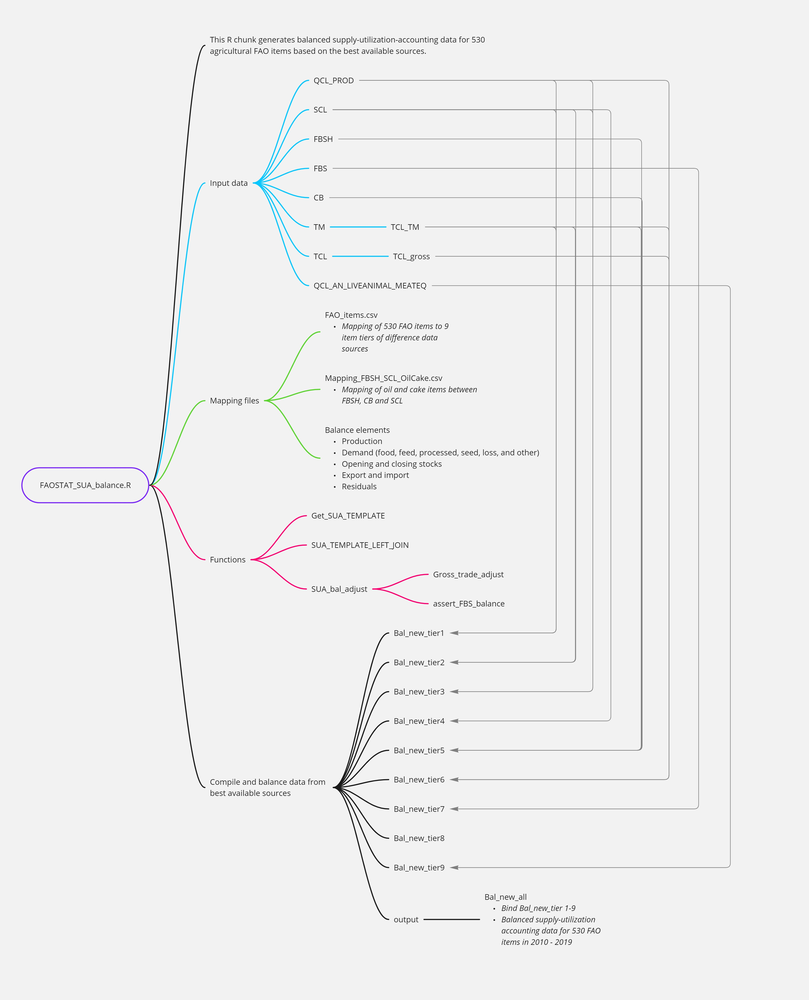

gcamfaostat data processing
2024-03-16
Source:vignettes/vignette_processing_flow.Rmd
vignette_processing_flow.RmdData processing
Module structure
The architecture of gcamfaostat processing modules is depicted in the
Figure 1 below. This framework
currently comprises eight preprocessing modules and nine processing and
synthesizing modules, generating twelve output files tailored for GCAM
v7. Each module is essentially an R function with
well-defined inputs and outputs. To showcase the flexibility and
expandability of our package, we also incorporated two AgLU modules
(from gcamdata) that exemplify the data aggregation
processes, e.g., across regions, sectors, and time. Moreover, the
driver_drake function plays a pivotal role by executing all
available data processing modules, thereby generating both intermediate
and final outputs, which are vital components of our comprehensive data
processing pipeline.
 Figure 1. The architecture of data processing modules in
gcamfaostat
Figure 1. The architecture of data processing modules in
gcamfaostat
Data synthesizing in a key module
Of particular significance is the
module_xfaostat_L105_DataConnectionToSUA, which plays a
pivotal role in harmonizing various FAOSTAT datasets to generate a
cohesive set of agricultural supply and utilization accounts (SUA) data.
This complex process is elucidated in the following Figure 2. This endeavor entails
working through nine tiers of data, each sourced differently, with the
aim of producing an harmonized agricultural SUA dataset for over 500
agricultural commodities. Compared to the FAO’s FBS, which report food
and nutritional information for about 100 composite categories, in many
cases combining primary and processed commodities (e.g., wheat and
flour) within a single category (e.g., wheat and products), the
constructed SUA explicitly trace the transformations between primary and
processed commodities, while reporting nutritional details at a highly
disaggregated level (over 500 commodities). In doing so, the constructed
dataset substantially simplifies the FAOSTAT data processing steps by
explicitly distinguishing food and nutritional supply at the individual
commodity level and facilitating a straightforward mapping of the
corresponding data to the global agroeconomic models.
As an illustrative example, the first tier comprises 168 commodities,
generated by combining production data from QCL, trade data from TM, and
other essential balancing elements (such as opening and closing stocks,
food and feed uses, and other industrial uses) from SCL. For a more
comprehensive understanding of these procedures, we encourage an
interested user to explore the mapping file, FAO_items. It is crucial to
underscore the importance of these processing procedures, as raw FAOSTAT
data often contains duplicated elements and inconsistencies among
different datasets. For instance, trade data can be found in TCL, TM,
SCL, and FBS, while production data exists in QCL and SCL.

Figure 2. FAOSTAT agricultural supply utilization data synthesis
in module_xfaostat_L105_DataConnectionToSUA. Note that the nine
tiers of data, distinguished by commodities (or items in FAOSTAT terms)
included, have different sources for generating agricultural supply
utilization accounts.
driver_drake
- The function runs data processing modules sequentially to generate intermediate data outputs and final output (e.g., csv or other files) for GCAM (gcamdata) or other models.
- The function is inherited from gcamdata and it uses the drake (Landau 2018) pipeline framework, which simplifies module updates, data tracing, and results visualization process.
- It stores the outputs in a drake cache so that when the function is run again, it skips the steps that are up-to-date.
- In constants.R, users can set OUTPUT_Export_CSV = TRUE and specify
the output directory (
DIR_OUTPUT_CSV) to export and store the output csv files (currently the default option for GCAM v7).
Data tracing
Key functions
As gcamfaostat is built upon the foundation of gcamdata
and leverages the powerful drake framework, inheriting functions
designed for tracking data flows. In the following, we will delve into
several key features that exemplify the strengths of this
integration.
info
* The function returns information of an object, including name,
metadata information, precursors and dependents.
dstrace
* The function is able to trace data flows by providing precursors and
dependents of an object recursively.
load_from_cache
* If a drake cache is available, e.g., when driver_drake()
had been run, this function, if given a list of object names, loads the
objects from the cache into a list of data frames.
* The function get_data_list
can be used to assign each object in the list to a data frame.
Examples
# Load gcamfaostat
# devtools::load_all()
library(gcamfaostat)
# package data, GCAM_DATA_MAP, will be loaded
# Get information for an intermediate data frame QCL_CROP_PRIMARY
info("QCL_CROP_PRIMARY")
#> QCL_CROP_PRIMARY - produced by module_xfaostat_L102_ProductionArea
#> FAO primary crop area and production (various)
#> Detailed FAO QCL data processing for crop area and production
#> Dependent: xfaostat_L199_GCAMDATA_FAOSTAT_CSV
#> Precursor: aglu/FAO/FAO_an_items_PRODSTAT
#> Precursor: QCL_wide
#> Precursor: FBS_wide
#> Precursor: FBSH_CB_wide
# Trace all downstream data flows for SCL_wide
dstrace("SCL_wide", direction = "downstream", recurse = T)
#> 1 - SCL_wide - produced by module_xfaostat_L101_RawDataPreProc3_SCL_FBS
#> FAO supply utilization account dataset, 2010+, wide (tonne)
#> Preprocessed FAOSTAT SCL; ** PRE-BUILT **
#> Dependent: Bal_new_all (#2 below)
#> Dependent: SUA_food_macronutrient_rate (#3 below)
#> 2 - Bal_new_all - produced by module_xfaostat_L105_DataConnectionToSUA
#> Bal_new_all (Ktonne)
#> Preprocessed FAO SUA 2010 - 2019
#> Dependent: xfaostat_L199_GCAMDATA_FAOSTAT_CSV (#4 below)
#> 4 - xfaostat_L199_GCAMDATA_FAOSTAT_CSV - produced by module_xfaostat_L199_CSVExportAgSUA
#> Export CSV to DIR_OUTPUT_CSV (NA)
#> Export CSV
#> No dependents
#> 3 - SUA_food_macronutrient_rate - produced by module_xfaostat_L106_FoodMacroNutrient
#> FAO food calories and macronutrient rate (rates)
#> Detailed FAO food calories and macrotunitent info for 414 SUA items +
#> 12 fish items
#> Dependent: xfaostat_L199_GCAMDATA_FAOSTAT_CSV (#4 above)
# Get input of a module
inputs_of("module_xfaostat_L105_DataConnectionToSUA")
#> [1] "aglu/FAO/FAO_items" "aglu/FAO/Mapping_FBSH_SCL_OilCake"
#> [3] "QCL_PROD" "QCL_AN_LIVEANIMAL_MEATEQ"
#> [5] "TCL_wide" "TM_bilateral_wide"
#> [7] "FBSH_CB_wide" "FBS_wide"
#> [9] "SCL_wide"
# Get output of a module
outputs_of("module_xfaostat_L106_FoodMacroNutrient")
#> [1] "SUA_food_macronutrient_rate"
# Not evaluated for convenience
# Load gcamfaostat
devtools::load_all()
# Load FAO_items from cache
load_from_cache("aglu/FAO/FAO_items") %>% first() -> FAO_items
# Print
head(FAO_items)
# Define a list of input data
MODULE_INPUTS <- c("Bal_new_all")
# Load a list of MODULE_INPUTS from cache and assign to their name
get_data_list(all_data = load_from_cache(MODULE_INPUTS), data_list = MODULE_INPUTS)
# Print
head(Bal_new_all)